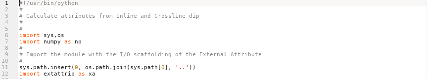
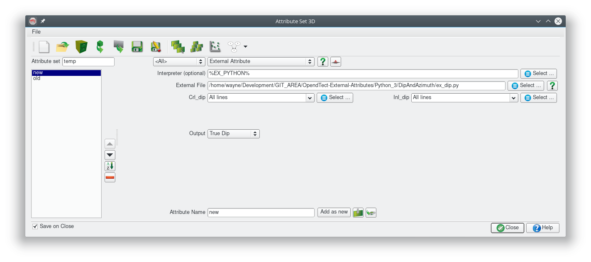
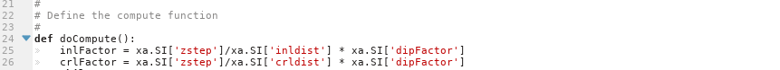
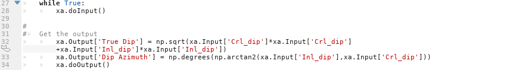
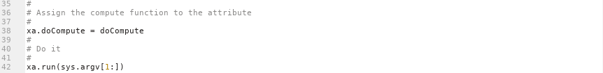

Introduction
This article will review the structure of a simple Python ExternalAttrib script, ex_dip.py, which converts inline and crossline dip to true dip and dip azimuth. It is an example of multi attribute, single trace input and output. Some basic understanding of Python and Numpy is assumed.
Every Python attribute script has 5 sections.
The Imports

This is where external modules/libraries required by the script are loaded. At a minimum the script must load:
- the Python sys and os modules
- the Numpy module (the fundamental package for scientific computing with Python)
- the external attribute module (extattrib.py)
Generally sys, os and Numpy will be part of the Python installation. The extattrib module is part of the external attribute scripts package and its location is unknown to the Python installation unless we help out. The sys.path.insert call on line 11 provides this help by extending the default search path for Python modules to include the parent folder of the folder containing the script. This reflects the folder structure of the external attribute scripts package, so if you develop scripts outside this structure then you will need to change line 11 appropriately to append the location of extattrib.py to the module search path.
Of course if your script requires other Python modules (eg SciPy, Numba) then add the appropriate import statements in this section.
The Parameters

The xa.params global variable must be assigned a JSON object string describing the input parameters for the script. This JSON string is used by the plugin to build an input dialog box. This attribute is very simple specifying just 2 input volumes and 2 output volumes and a url for documentation. The plugin dynamically builds the following input dialog for this script:

A variety of other input elements can be specified to build more complex input dialogs. See the JSON Parameter String section of the plugin documentation for full details or look at other scripts to see what is possible.
The Compute Loop Initialisation

The doCompute function is where the attribute calculation occurs. The function is divided into 2 parts some initialisation and the "while True:" loop, discussed in the next section, where the calculations actually take place. Any code in this initialisation section will be executed just once when the attribute script is run and is a good place to calculate constants for use in the Compute Loop.
This particular script shows how information stored in the SeismicInfo Block can be used to calculate some constants purely as an example. This attribute is so simple that no initialisation is actually required.
The Compute Loop

This is where the attribute calculation takes place. The xa.doInput() and xa.doOutput() function calls control the input and output of seismic trace data between the script and OpendTect. Generally these should be the first and last statements within the compute loop.
Within the compute loop, some information about the current trace data such as the number of samples and the inline and crossline location are provided in the TraceInfo Block. These can be accessed using constructs like xa.TI['nrsamp']. This information is not required for this particular script.
The global Numpy array xa.Input contains the input trace data. xa.Input['name of input attribute'] returns a Numpy array with the trace data for the current compute location. The shape of this Numpy array depends on the traces stepouts required by the attribute. As this particular script uses just single trace input (inline and crossline step out of 0) the Numpy array has a shape of (1,1,xa.TI['nrsamp']). In the more general case of a multi-trace attribute the Numpy array shape would be (xa.SI['nrinl'], xa.SI['nrcrl'], xa.TI['nrsamp']) and the input trace at the current location would be at the centre of the array, ie at index [xa.SI['nrinl']//2, xa.SI['nrcrl']//2,...].
Attribute ouput must be put into the xa.Output global Numpy array before the xa.doOutput() function call. Each element (eg xa.Output['name of output attribute']) of the output array must have a shape of (1,1,xa.TI['nrsamp'])
The Postamble

This section is just boilerplate code that apprears in every attribute script which should never be changed.